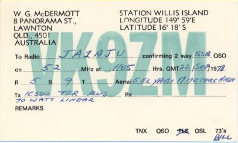

話題の局・QSL
VK9ZM・Willis I.


VK9(Willis I.)が6mでJAに初めて入感したのは、1978年9月21日のVK9ZM・Billだった。

Willis IsのQSL's
52MHz時代のWillis Isは、気象観測のため職員が常駐していて
VK9の中では一番アクティビィティーの高かったエンティティー

VK9(Willis I.)が6mでJAに初めて入感したのは、1978年9月21日のVK9ZM・Billだった。
Willis IsのQSL's
52MHz時代のWillis Isは、気象観測のため職員が常駐していて
VK9の中では一番アクティビィティーの高かったエンティティー